Arnav Krishnan - Hash Analysis
- Analysis of Input
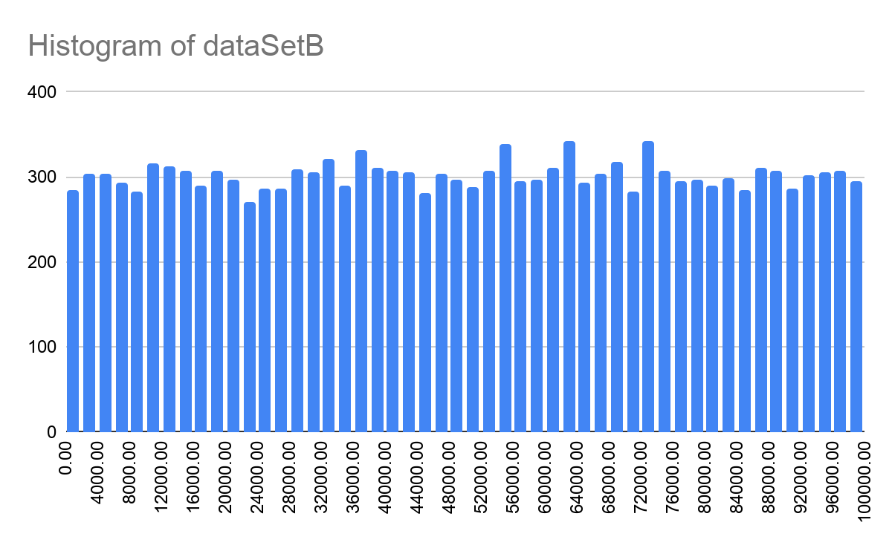
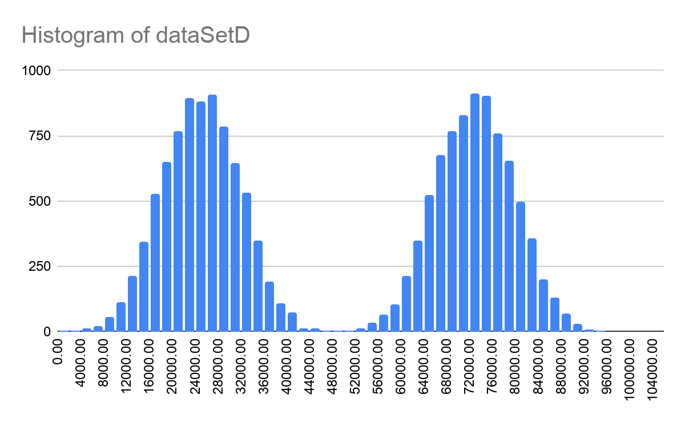
Left: Data Set B; Right: Data Set D.
- From these graphs, we can see that Data Set B is roughly uniformly distributed across the full range. Values are spread fairly evenly with no real “clusters”. Essentially, it is random, uniform data.
- Data Set D has a strong bimodal distribution, having two distinct clusters of values, with extreme frequency values present- very high frequency at both ‘peaks’, and near-zero frequency in between. Essentially, the data is concentrated in two specific ranges.
- Overall, I would expect D to generally show worse performance than B, especially at higher load factors, and particularly for Linear Probing.
- However, this is NOT the case! This is because a good hash function will scatter the dense clusters of Data Set D across many buckets. Those dense clusters get broken apart. On average, there will actually be less collisions on data set D. That is why we see better performance overall on dataset D, over a range of implementations.
- Analysis of Performance
Blue, Red, Yellow, and Green lines correspond to:
Contains-hit, Contains-miss, Remove, and Add
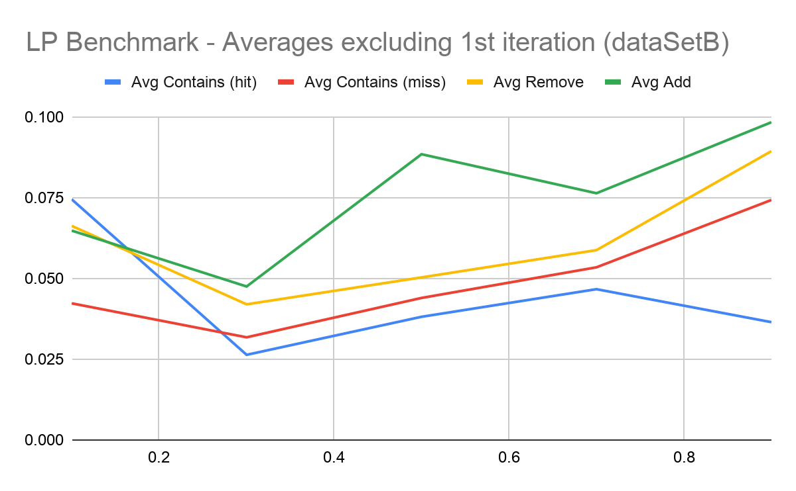
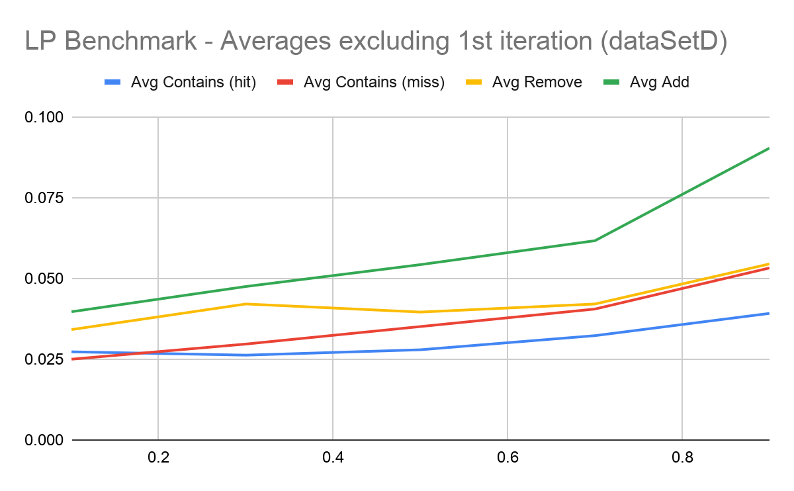
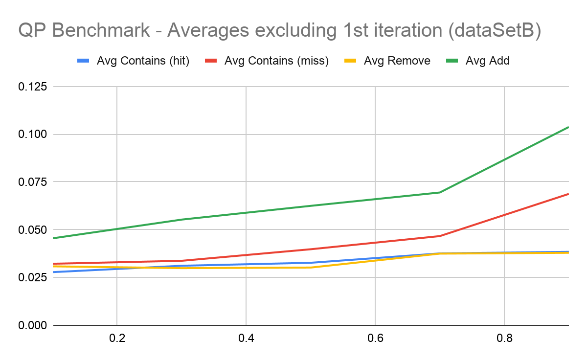
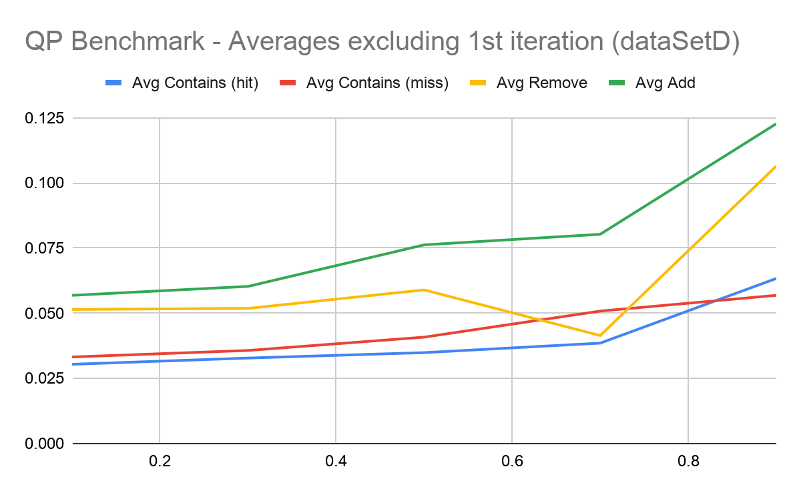
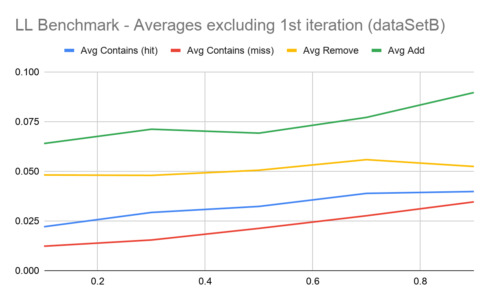
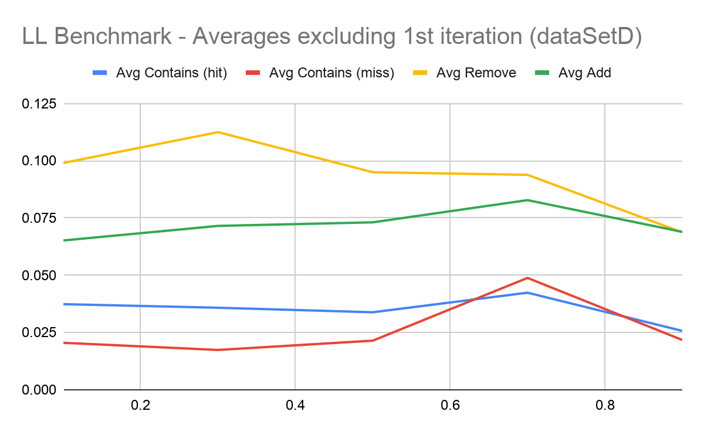
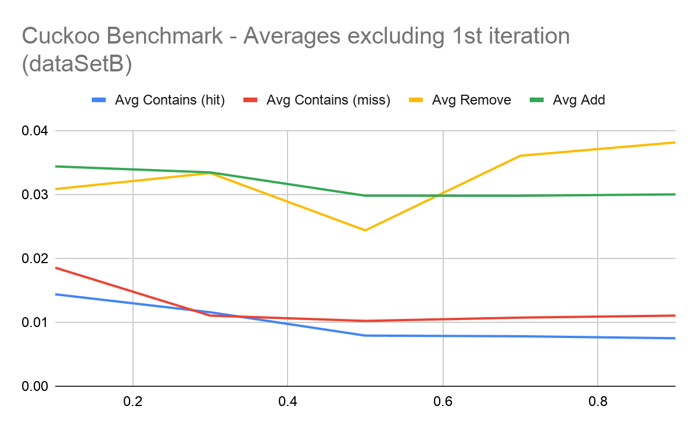
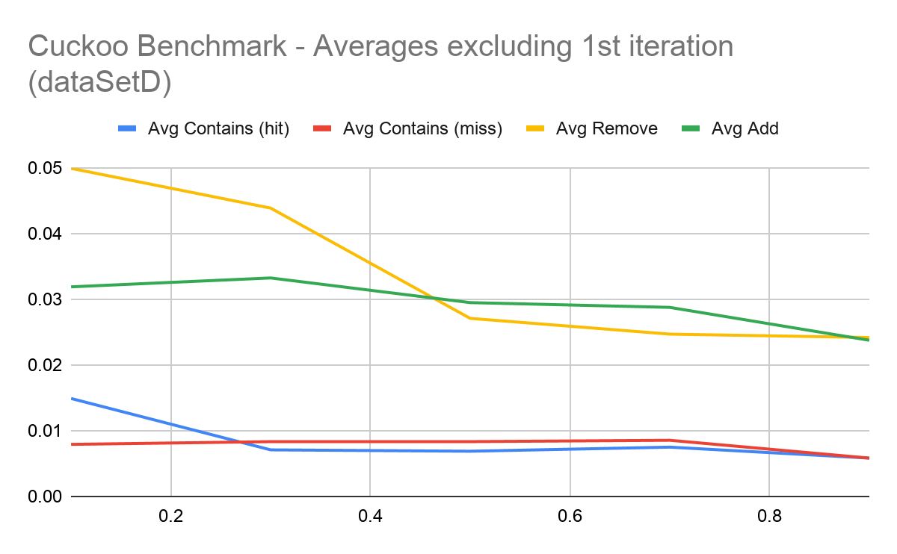
- Contains-hit and contains-miss both increase with load factor, with contains-miss rising more steeply; makes sense as misses must probe further before finding the desired slot
- Remove and add also increase with load factor
- DataSetD consistently performed better than DataSetB, for all 4 functions, and scaled at a more predictable rate. Although it seems counterintuitive, I expected data set D to have generally better performance, as explained in (a).
- I removed iteration 0 values, as during JVM warmup, the values were consistently higher. Instead, I simply averaged iterations 1-4.
- Similar to the shape of LP but generally lower times
- Performance is roughly equal between the two datasets. Notably, we did not see dataset D performing significantly worse than dataset B; although counterintuitive, I explain why this is the case in (a).
- Adding is consistently the most expensive operation, which is expected for quadratic probing.
- Same with linear probing, I removed iteration 0 values, as during JVM warmup, the values were consistently higher. Instead, I simply averaged iterations 1-4.
- Contains-miss is consistently the lowest of all operations. This is expected as LL doesn’t need to probe, a miss just hits a null slot.
- Performance degrades slightly with higher load factors on dataSetB, but actually improves performance with higher load factors on dataSetD, especially from loadfactor=0.7 to loadfactor=0.9.
- Overall, dataSetD had slightly worse performance on low load factors, but outperformed dataSetB on higher load factors, significantly, suggesting overall superior performance on data set D. Although counterintuitive, I explain why this is the case in (a).
- Same with linear and quadratic probing, I removed iteration 0 values, as during JVM warmup, the values were consistently higher. Instead, I simply averaged iterations 1-4.
- By far the fastest for all 4 operations, especially contains-hit and contains-miss
- Great performance on both datasets (B and D)-- but it is clear that performance is best on data set D.
- Essentially flat performance across load factors-- data set D was simply faster, for all 4 functions, on all load-factors, overall (2 exceptions out of 20 datapoints).
- Cuckoo guarantees O(1) performance for worst-case lookup
- A tradeoff for this fast performance would be high memory usage; though not shown in the graph, the tableSize grows dramatically.
- Same with linear and quadratic probing, as well as linked list, I removed iteration 0 values, as during JVM warmup, the values were consistently higher. Instead, I simply averaged iterations 1-4.
-
-
- Comparison of Hash Implementations
Strengths and Weaknesses:
- LP - Simple to implement, but performance degrades significantly at higher load factors. Contains-miss becomes expensive as probing chains grow too long. Poor choice at high load factors.
- QP - Reduces clustering when compared to LP using quadratic steps so performance degrades slower. Clustering still can exist, and probing for contains-miss can similarly become expensive.
- LL - Quite resilient to high load factors since the linked-list chains just grow longer rather than interfering with each other. Contains-miss is the cheapest of all implementations since a miss resolves immediately once encountering a null. One thing to note, however, is that memory overhead is higher in the LL implementation due to higher costs of each node.
- Cuckoo - Fastest lookup, especially for contains and removal. However, it is by far the most complex to implement. Also, the tableSize grows aggressively, consuming more memory than the other implementation techniques. It is the best choice when lookup speed is important, but plenty of memory is available.
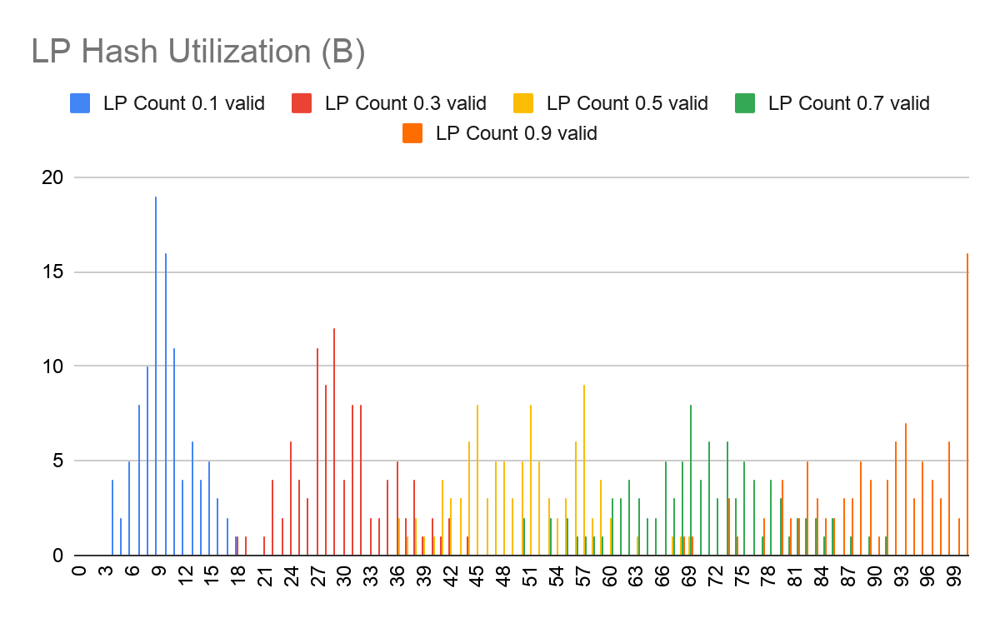
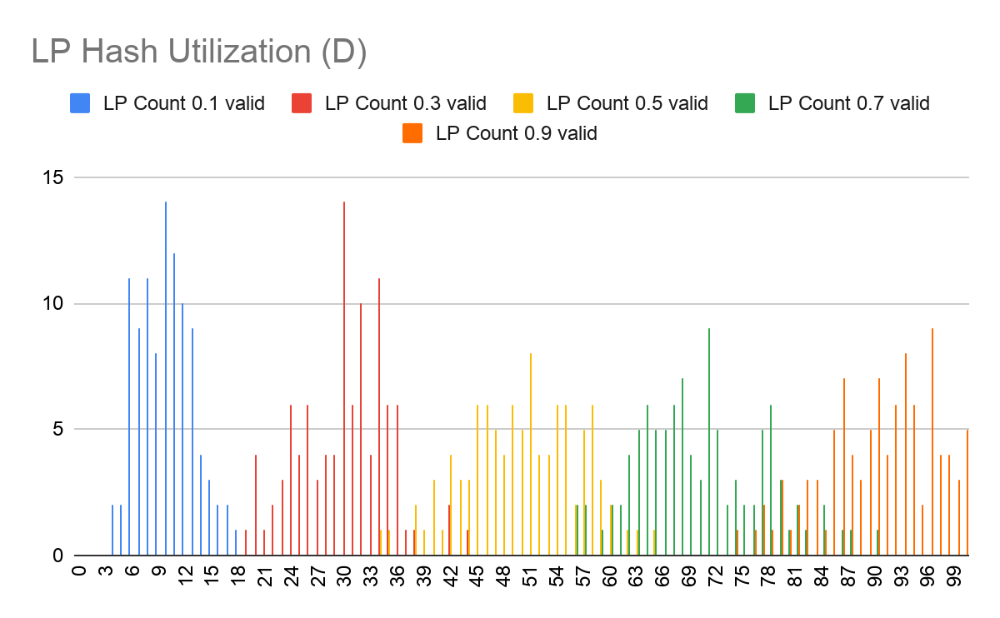
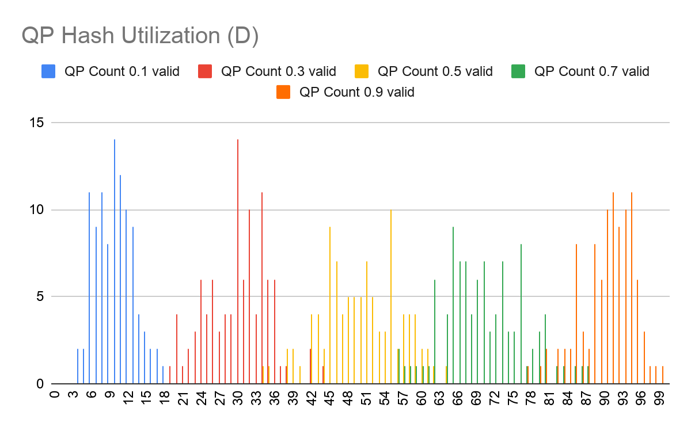
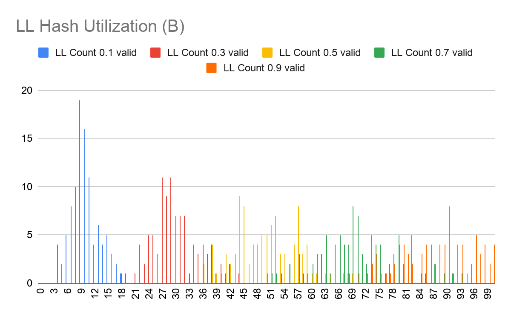
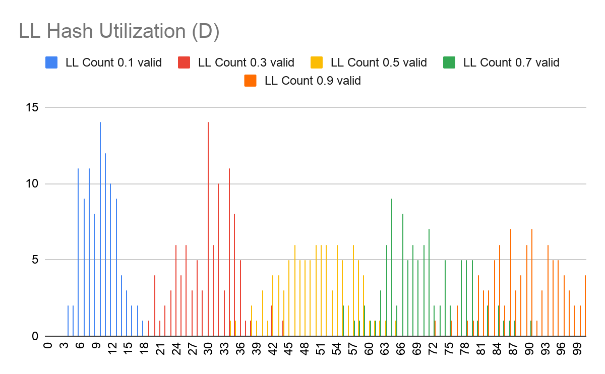
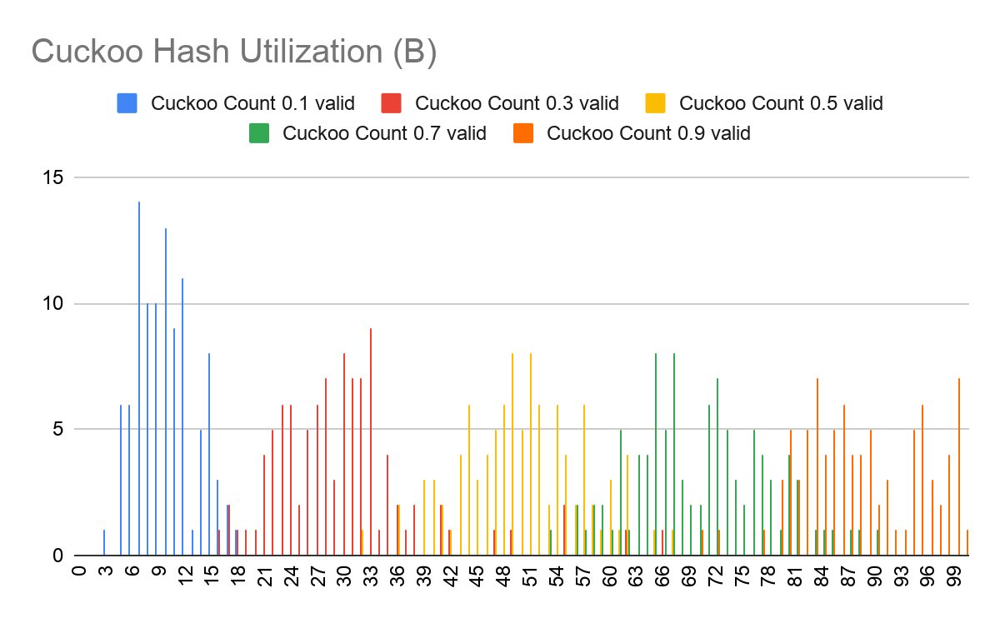
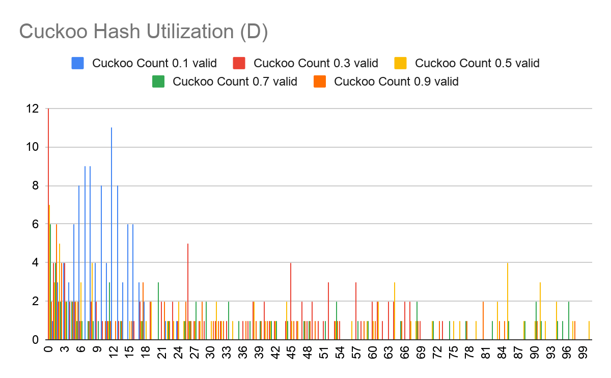
- Distribution of valid slots is very uniform across all 100 chunks at every load factors, no obvious clustering for both LP and QP
- As load factor rises, valid counts per chunk rise proportionally
- LP and QP look nearly identical in utilization, which makes sense since they use the same underlying array structure, just with a different method of probing
- Datasets B and D show similar utilization patterns; the bimodal distribution of D didn’t significantly impact how evenly keys were distributed across the table; clustered input values were distributed fairly evenly.
- Similar uniform distribution to LP/QP for valid counts
- However valid counts can exceed 100 per chunk at high load factors since multiple keys can chain (form a linked list) at the same index, which is the main difference from LP/QP
- This one is the most interesting by far…
- Valid counts per chunk, especially for dataset D, are TINY!
- Despite high load factors, the table grew so dramatically.
- Empty counts are enormous.
- Memory tradeoff of Cuckoo for fast lookup.
- Utilization does not match the load factor
- Reflection
Through this assignment I gained a much deeper understanding of hashes, a data structure that I had previously not known about. Even during our hashes unit, while I was able to better understand the differences between Linear Probing, Quadratic Probing, Linked List, and Cuckoo implementations, this analysis helped me see the actual performance differences between them. For instance, seeing how Cuckoo had incredibly fast lookup times, but terrible memory utilization showed me the tradeoffs between different methods. And in a more general sense, this assignment taught me to come in with a hypothesis, but to accept when the data contradicts that hypothesis. And rather than trying to make the data fit my preconceptions, I should try and see the story that the data is telling, and understand why I got the results I did. The performance difference between datasets B and D was quite literally the opposite of what I predicted, and it was really cool to figure out why.
To be honest, the most challenging part of this assignment was creating the graphs. Although it wasn’t the ‘core idea’ of the unit (as opposed to coding the hash implementations), it gave me a deeper understanding of the work that goes into data analysis. Indeed, collecting data is just one part of understanding successes and failures. However, in terms of the actual coding, the place_cuckoo() method was by far the most difficult. I used a recursive strategy, going through both hashes on each recursive step, which worked quite well, though it did take me some time to figure out.
One thing that surprised me was the effect that dataSetD’s bimodal distribution had on most hash types (LP, QP, LL, NOT Cuckoo). I expected much worse performance across the board, but really LP and QP showed a (albeit slight) improvement in performance! This suggests that the hash function itself was doing a reasonable job of dispersing the clustered inputs across the table.
One thing I wonder is how these implementations would scale with much larger datasets. I wonder this because our table started at 10,009 but real applications may use millions, if not more, entries. One more thing I wonder is whether a different hash function could eliminate, or exacerbate, the performance gap between datasets B and D.